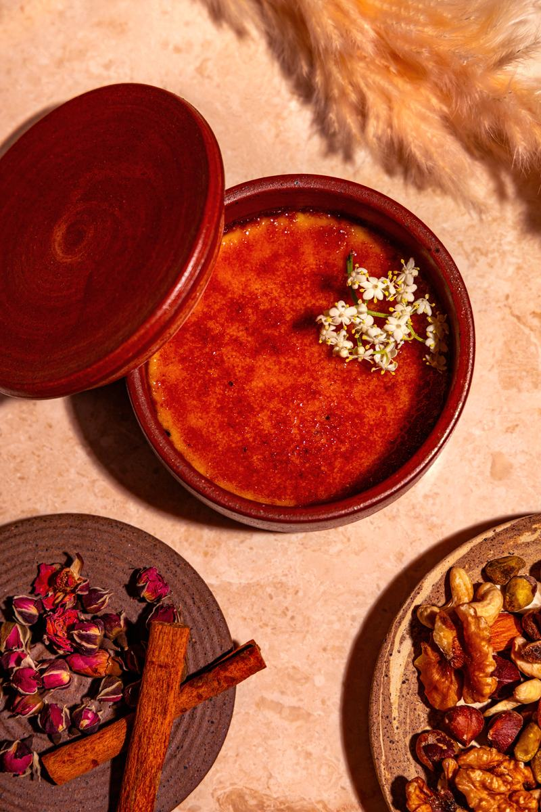
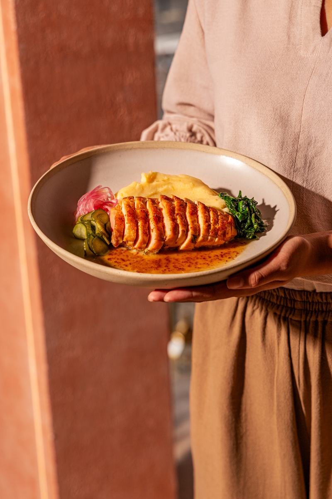

About SILK · Canggu, BaliО SILK · Чангу, Бали
The first Silk Road
restaurant in Bali
Not a cuisine you order — a journey you sit down inside. Five things carry it: atmosphere, ritual, aroma, fire, and the story told at your table.
Первый ресторан
Великого шёлкового
пути на Бали
Это не кухня, которую заказывают, — это путешествие, внутрь которого садятся. Его несут пять вещей: атмосфера, ритуал, аромат, огонь и история, рассказанная за вашим столом.
The JourneyПутешествие
A road you can taste in one evening
The caravans moved slowly. A sack of rice left Fergana and arrived in Aleppo changed — cooked differently at every stop, renamed, argued over. SILK is built on that habit of borrowing.
An evening here follows the same order the road did: you arrive to a room, you are given a ritual, you smell the fire before you see it, and someone tells you where the dish came from.
Путь, который можно попробовать за один вечер
Караваны двигались медленно. Мешок риса выходил из Ферганы и приходил в Алеппо уже другим — его готовили иначе на каждой остановке, переименовывали и спорили о нём. SILK построен на этой привычке заимствовать.
Вечер здесь идёт в том же порядке, что и дорога: сначала зал, потом ритуал, потом запах огня — раньше, чем вы его увидите, — и наконец кто-то рассказывает, откуда пришло блюдо.
-
AtmosphereАтмосфера
Low light, turquoise tile, tables long enough to lose track of time.Тёплый свет, бирюзовая плитка и столы, за которыми теряется счёт времени.
-
RitualРитуал
Bread torn by hand, tea poured three times, plov opened at the table.Хлеб, разломленный руками, чай, налитый трижды, плов, открытый у стола.
-
AromaАромат
Cumin, saffron, smoke and burnt sugar — the room announces the kitchen.Зира, шафран, дым и жжёный сахар — зал объявляет кухню раньше официанта.
-
FireОгонь
Mangal, tandoor and kazan. Everything central is cooked over coals.Мангал, тандыр и казан. Всё главное готовится на угле.
-
StorytellingИстории
Every dish arrives with an origin. Ask, and you get the long version.У каждого блюда есть происхождение. Спросите — расскажут длинную версию.
A Geography of FlavorsГеография вкусов
Two halves of one road
The menu is drawn between the Middle East and Central Asia — the two ends that traded hardest with each other, and cooked most alike without admitting it.
Две половины одной дороги
Меню натянуто между Ближним Востоком и Центральной Азией — двумя концами пути, которые торговали друг с другом плотнее всех и готовили почти одинаково, не признавая этого.
Middle EastБлижний Восток
- Levant
- Левант
- Mezze, labneh, muhammara, charcoal flatbread
- Мезе, лабне, мухаммара, лепёшки на угле
- Anatolia
- Анатолия
- Adana and shish kebabs, pide, ezme
- Кебаб адана и шиш, пиде, эзме
- Persia
- Персия
- Saffron rice, barberries, pomegranate stews
- Шафранный рис, барбарис, гранатовые тушения
- Caucasus
- Кавказ
- Bread from open fire, walnut sauces, herbs by the bunch
- Хлеб на открытом огне, ореховые соусы, зелень пучками
Central AsiaЦентральная Азия
- Samarkand
- Самарканд
- Plov in a cast-iron kazan, quince, yellow carrot
- Плов в чугунном казане, айва, жёлтая морковь
- Bukhara
- Бухара
- Samsa from the tandoor, lamb, black cumin
- Самса из тандыра, баранина, чёрная зира
- Fergana
- Фергана
- Devzira rice, hand-pulled lagman
- Рис девзира, лагман, тянутый руками
- Steppe
- Степь
- Smoked horse sausage, sour milk, boiled dough
- Копчёная казы, кислое молоко, отварное тесто
The Neo-modern PositionПозиция нео-модерн
This is not an ethnic restaurant.
It is a neo-modern kitchen that happens to remember where it came from — traditional recipes, modern technique, contemporary presentation.
Это не этнический ресторан.
Это нео-модерн кухня, которая помнит, откуда пришла: традиционные рецепты, современная техника, актуальная подача.
-
RecipesРецепты
Traditional, unshortenedТрадиционные, без сокращений
Plov still takes four hours. Dough is still rested overnight. Nothing is sped up to make service easier.Плов по-прежнему готовится четыре часа. Тесто по-прежнему отдыхает ночь. Ничего не ускоряется ради удобства сервиса.
-
TechniqueТехника
Modern, preciseСовременная, точная
Controlled fermentation, exact temperatures, coal handled like an instrument rather than a habit.Контролируемая ферментация, точные температуры, уголь как инструмент, а не как привычка.
-
PresentationПодача
Contemporary, unfussyАктуальная, без суеты
Plates that belong to now — no costumes, no folklore staging, no laminated flags.Тарелки, которые принадлежат сегодняшнему дню: без костюмов, без фольклорных постановок и ламинированных флагов.
The History of the BuildingИстория дома
Legend says merchants
lived in this house
A family of Silk Road traders is said to have kept this address for generations. They dealt in cloth and spice, but what they really collected was everything that travelled alongside it.
Recipes carried from a market three borders away. Goods nobody in town had names for. Knowledge traded for dinner. And stories — the currency that cost nothing and moved furthest.
Whether or not it is true, it is the foundation the brand stands on. SILK behaves like that household: it gathers, it hosts, and it passes things on.
A house that collected recipes, goods, knowledge and stories — and still does.
Legend, not record — told as it was told to us
По легенде в этом доме
жили купцы
Говорят, семья торговцев Великого шёлкового пути держала этот адрес несколько поколений. Они торговали тканью и специями, но собирали на самом деле всё, что шло вместе с ними.
Рецепты, привезённые с базара за три границы. Товары, для которых в городе не было названий. Знания, обменянные на ужин. И истории — валюту, которая ничего не стоила и уходила дальше всех.
Правда это или нет, но именно на этом стоит бренд. SILK ведёт себя как тот дом: собирает, принимает гостей и передаёт дальше.
Дом, который собирал рецепты, товары, знания и истории, — и продолжает собирать.
Легенда, а не документ — рассказано так, как рассказали нам


The MascotМаскот
Meet the Merchant
He is not a costume by the door. He is a character who works a real stall inside the restaurant, every evening.
The last descendant of the house, as the story goes — still trading, still collecting. He keeps his corner of the room stocked with spice, copper, cloth and things that need explaining. Guests come to him; he never sells to a table that didn't ask.
Знакомьтесь: Торговец
Это не костюм у входа. Это персонаж, который каждый вечер работает за настоящей лавкой внутри ресторана.
Последний потомок того дома, как рассказывает легенда, — всё ещё торгует, всё ещё собирает. В его углу зала специи, медь, ткань и вещи, которые требуют объяснения. Гости приходят к нему сами; он никогда не продаёт столу, который не спрашивал.
-
01
He tells legendsРассказывает легенды
Short ones between courses, long ones if the evening allows it.Короткие — между блюдами, длинные — если вечер позволяет.
-
02
He explains where dishes come fromОбъясняет, откуда блюда
Which city, which century, which argument about the right way to cook it.Какой город, какой век и какой спор о правильном способе готовки.
-
03
He brews coffee over sandВарит кофе на песке
Cardamom, a copper pot, hot sand. It takes as long as it takes.Кардамон, медная джезва, горячий песок. Столько времени, сколько нужно.
-
04
He leads mini-ritualsПроводит мини-ритуалы
Breaking bread, the third pour of tea, a wish spoken before plov is opened.Разлом хлеба, третья пиала чая, желание перед тем, как откроют плов.
-
05
He photographs guestsФотографирует гостей
On an old camera at the stall. The print is yours; the story stays with him.На старую камеру у лавки. Снимок — ваш, история остаётся у него.